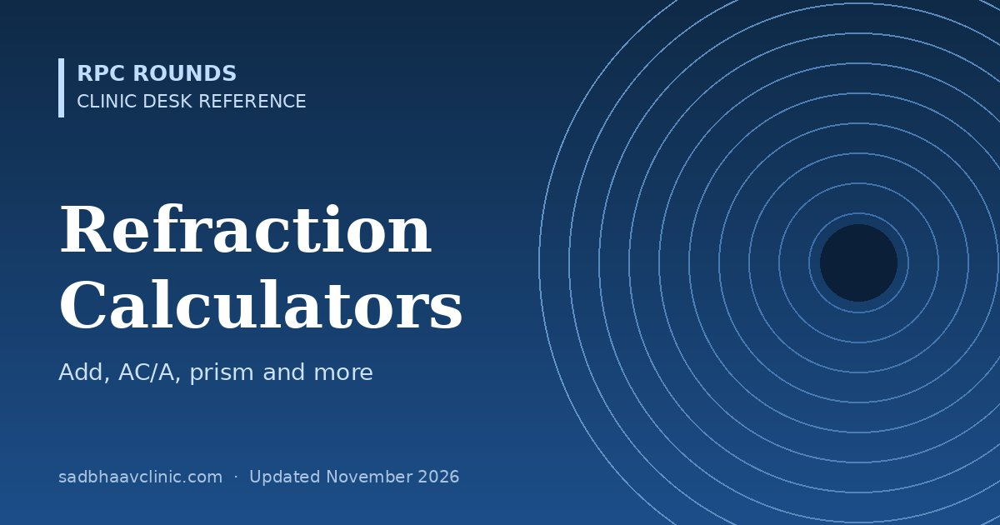

Last updated: November 2026
Five quick calculators for the refraction room and the viva: spherical equivalent and anisometropia, retinoscopy working distance, accommodation and the near add, AC/A ratio, and induced prism with vertical imbalance. Each shows its formula so you can check the working.
Spherical equivalent = sphere + cylinder ÷ 2. With spectacles, image size differs by roughly 1% per dioptre of anisometropia (rule of thumb); differences above 2–3% (about 2–3 D) often cause symptoms. Contact lenses greatly reduce this, especially in axial anisometropia.
Net = gross − 1 ÷ working distance (m). At 67 cm subtract 1.50 D; at 50 cm subtract 2.00 D. Do this for each meridian.
Hofstetter's expected amplitude of accommodation: minimum 15 − 0.25 × age, average 18.5 − 0.3 × age, maximum 25 − 0.4 × age. Near add = working-distance demand (1 ÷ distance in m) − half the amplitude, keeping half in reserve for comfort. If no measured amplitude is entered, the minimum expected for age is used, giving about +0.75 D at 45, +1.25 D at 50, +2.00 D at 55 and +2.50 D at 60 for 40 cm. Many clinicians start slightly stronger in the late 40s (+1.00 D at 45, +1.50 D at 50), so treat the result as a starting point. Always confirm by trial at the patient's own reading distance.
Heterophoria (calculated) method. Enter esodeviations as positive and exodeviations as negative prism dioptres.
AC/A = IPD (cm) + (near deviation − distance deviation) ÷ near accommodative demand (D).
Gradient method. Measure at the same fixation distance with and without a lens (for example −1.00 D at distance or +3.00 D at near).
AC/A = (deviation with lens − deviation without) ÷ (−lens power). Normal is about 3–5 Δ/D. The calculated method usually gives a higher value than the gradient method, because it includes proximal convergence.
Prism (Δ) = decentration (cm) × lens power (D). In a plus lens the base points towards the optical centre; in a minus lens, away from it.
Vertical imbalance at the reading point in anisometropia (power in the 90° meridian of each lens):
Power in the vertical meridian = sphere + cylinder × cos²(axis). Imbalance = difference between the two eyes × reading depth (cm). More than about 1–1.5 Δ of vertical imbalance often causes discomfort; options are slab-off (bicentric grinding), a lower reading position, separate reading glasses or contact lenses.
More detail: Prentice's rule with worked examples, Retinoscopy tips, Spectacle dispensing reference, Strabismus measurement, Formulas in ophthalmology.
📘 Want more exam-ready material? See Most Commons in Ophthalmology on Kindle, or browse all my books.
Looking for an eye specialist in Ahmedabad? Learn about our Eye Department or book a consultation with Dr. Dhaval Patel.